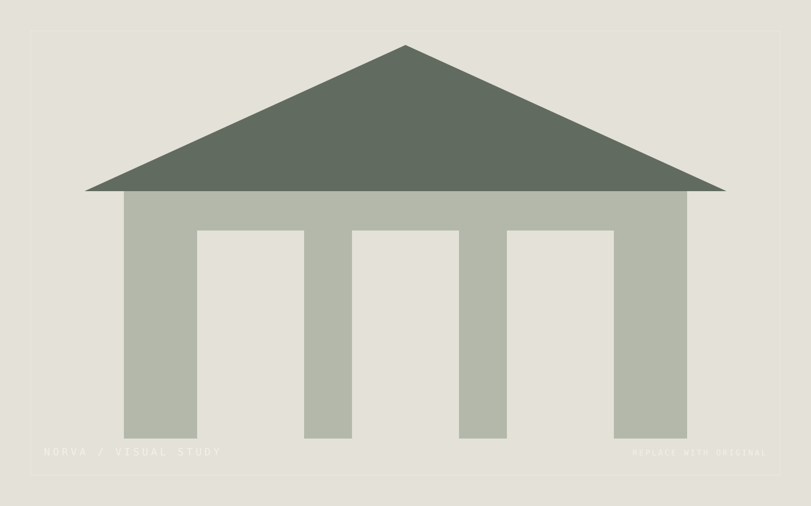

FIELD NOTES / 01—03
来自现场的
观察手记。
关于地方、人物与生活片段的持续记录。

01 / 地方与文化
喜马拉雅手记
来自喜马拉雅地区的旅行观察、文化景观与日常记录。内容将以原创照片、影像与文字逐步整理呈现。

02 / 人物
人物与相遇
记录人与人之间的相遇、对话与具体经验，关注个体如何与所在的地方和时代发生联系。

03 / 日常观察
地方与片刻
旅行中的片段、建筑与街道、自然景观，以及那些容易被忽略的日常瞬间。
当前图像为页面布局临时素材，后续将替换为原创田野影像与记录。